Haorui Yu
Artist, project lead — the round and the 3D room
Installation, performance and moving image. Trained at the School of Experimental Art, Tianjin Academy of Fine Arts.
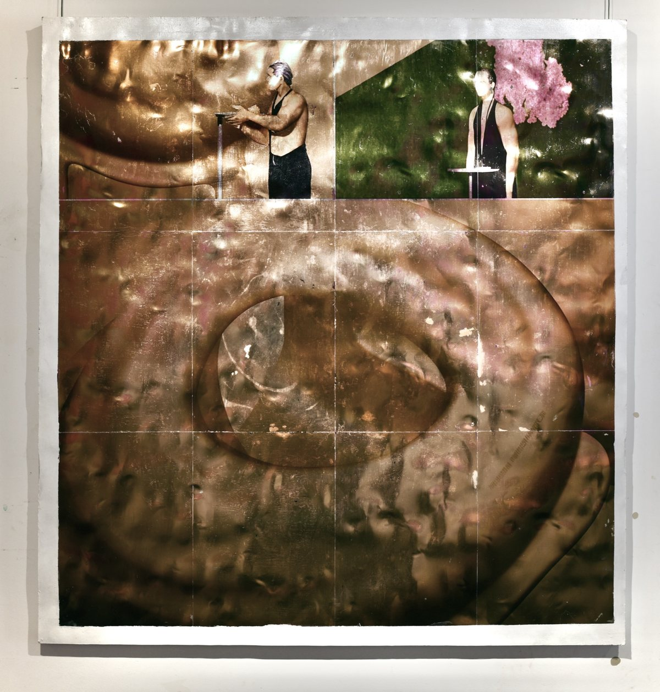
More work: yha9806.github.io
Project page · PACT Zollverein residencies, January–July 2027
An installation for three screens and a table, about a fictional bedroom that visitors change by drawing on a print.
Haorui Yu · Haitian Liu · Qiufeng Yi · Ziyue Yang
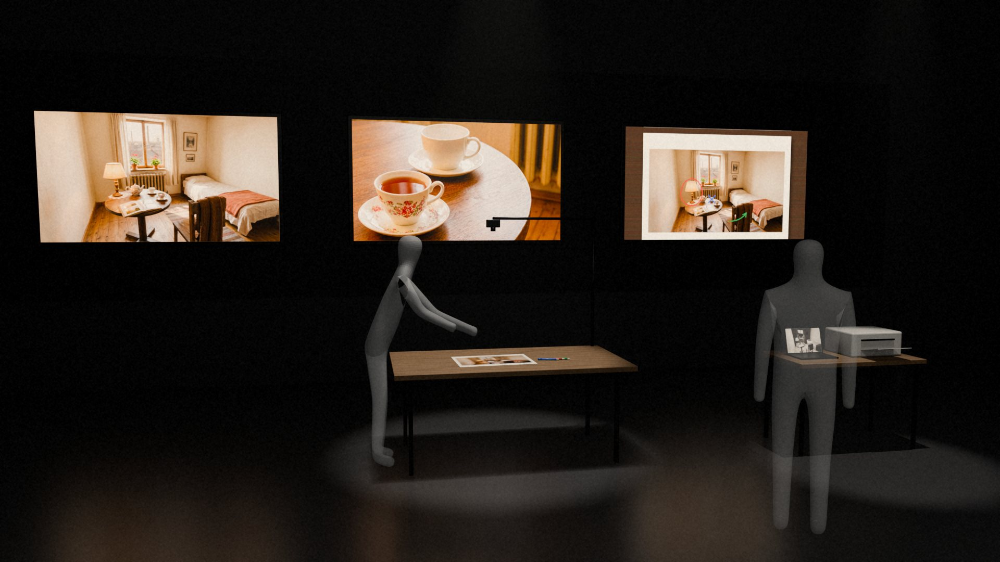
Who May Rewrite a Memory? is an installation about a fictional bedroom in the Ruhr. The room exists only as a 3D model, from which every picture of it is made. Three screens hang above a worktable. The left screen shows the current picture of the room. The centre screen plays a film of about 140 seconds with music, in which a curtain moves, tea is poured and a page is turned; only a hand is ever seen. On the right, a camera above the table shows only paper and hands.
On the table lie a print of the current picture and three pens: blue deletes an object, red changes or adds one, and green moves one. Anyone may draw, and the marks stay anonymous. After each visitor we choose one mark, change the room in 3D and print a new picture for the next visitor. The film keeps playing until its new version is ready. Every change is accepted and becomes part of the room's past, as if it had always been there. The work is about how a memory is rewritten when nobody objects.
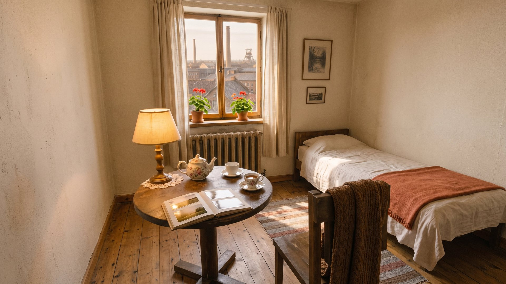
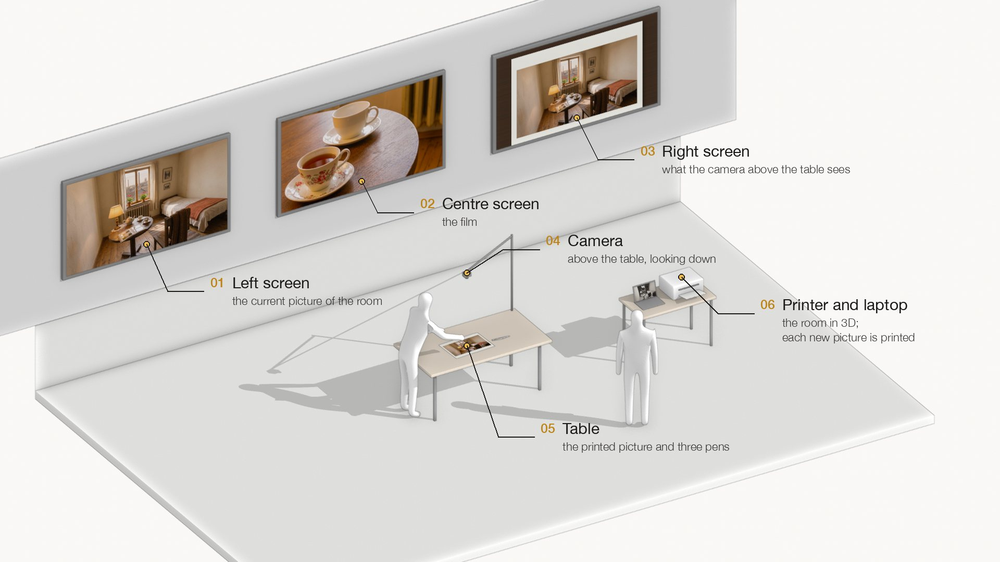
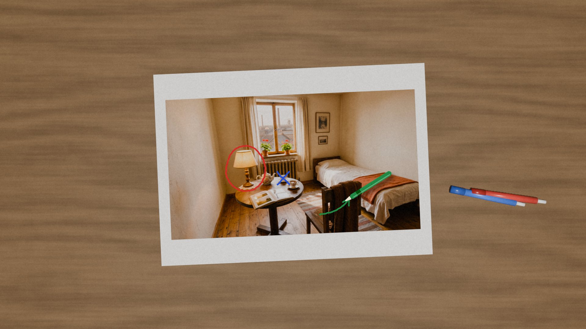
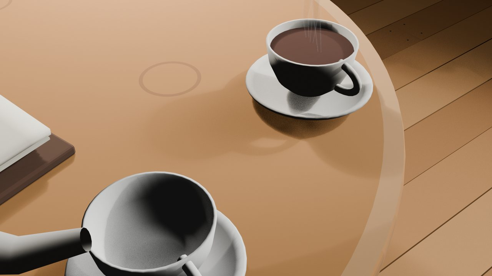
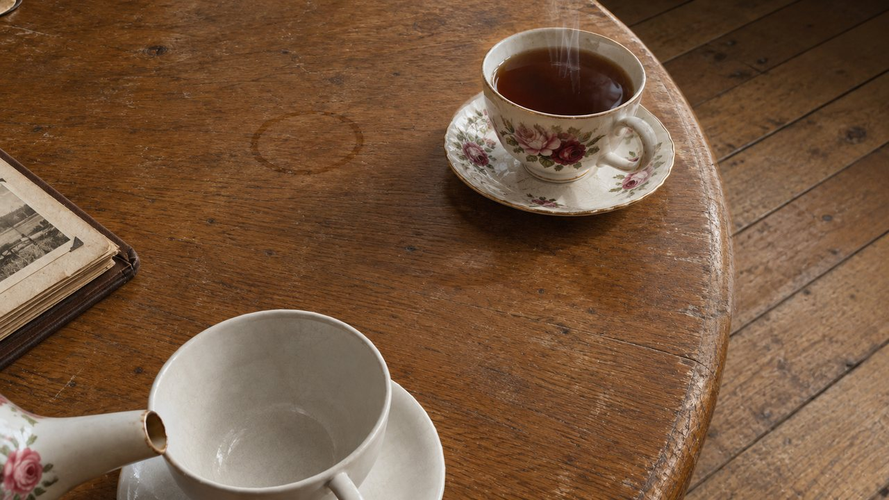
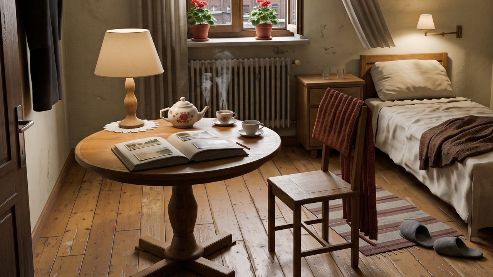
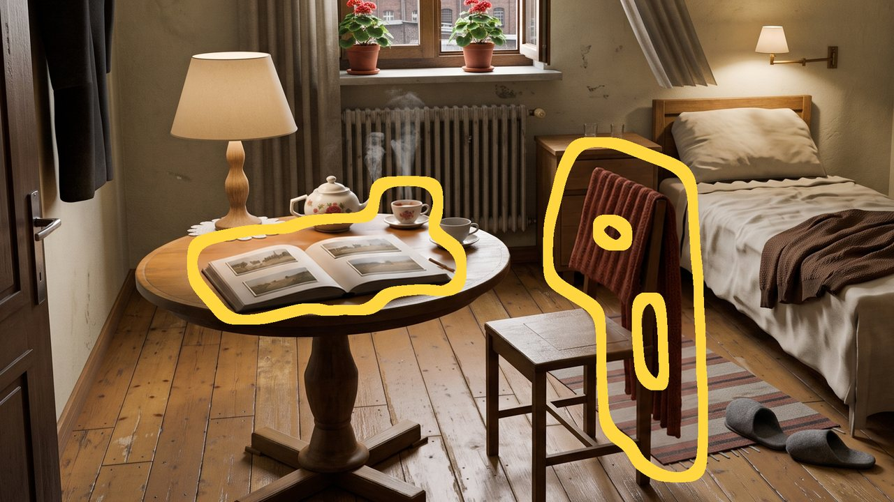
So far we have made a first example film and tested each step on its own. At PACT the whole loop would run for the first time, with visitors.
Artist, project lead — the round and the 3D room
Installation, performance and moving image. Trained at the School of Experimental Art, Tianjin Academy of Fine Arts.

More work: yha9806.github.io
Artist — concept, film and sound
Film, installation and everyday objects.
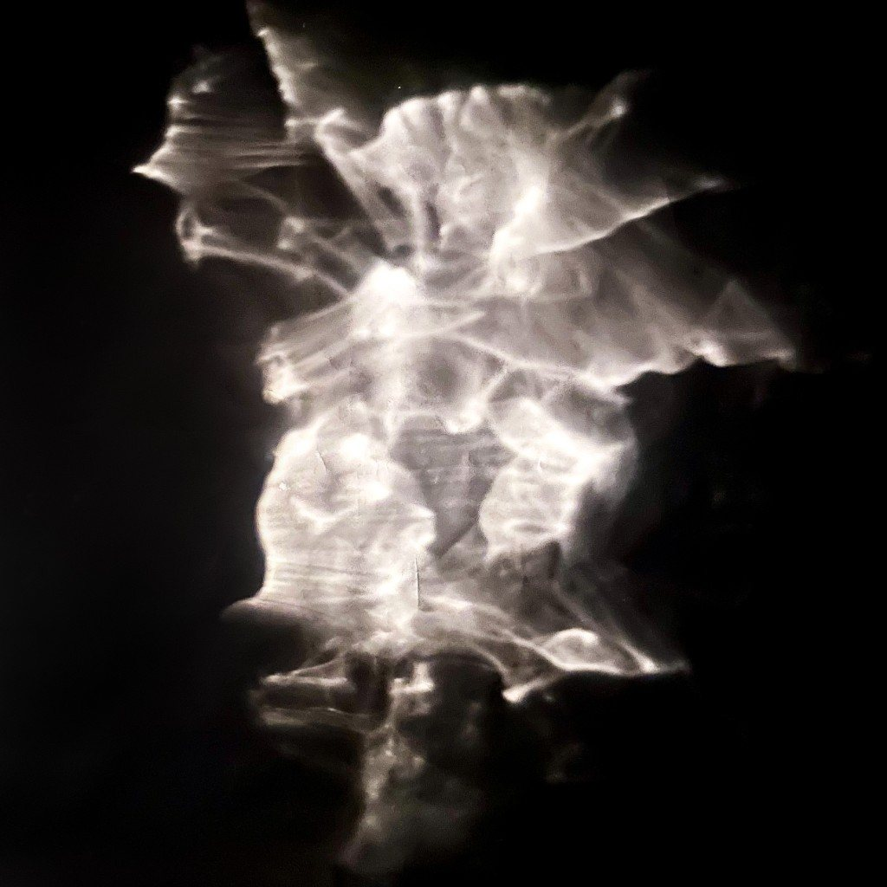
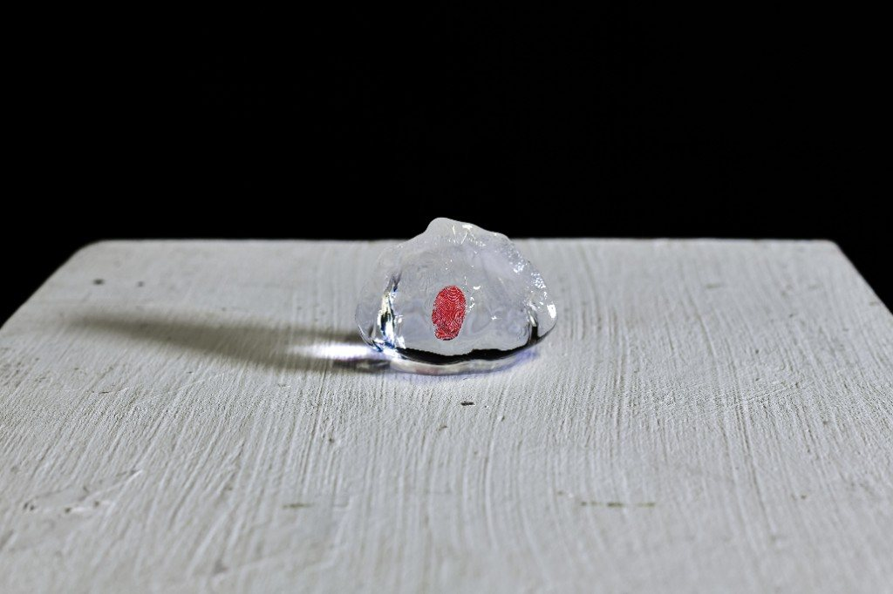
Technical support — image generation and checks
Computer vision and image processing, University of Birmingham. For this work he makes the new pictures from the guide images of the 3D room and checks them before they are used.
Artist — visual advice
Art and design, Tianjin Academy of Fine Arts; member of the collective Miyun Yizhi.
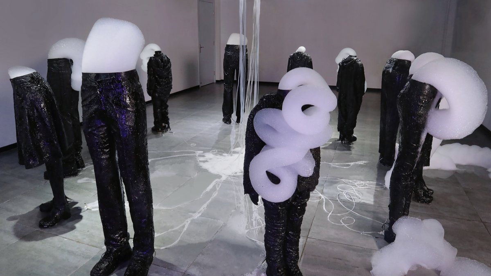
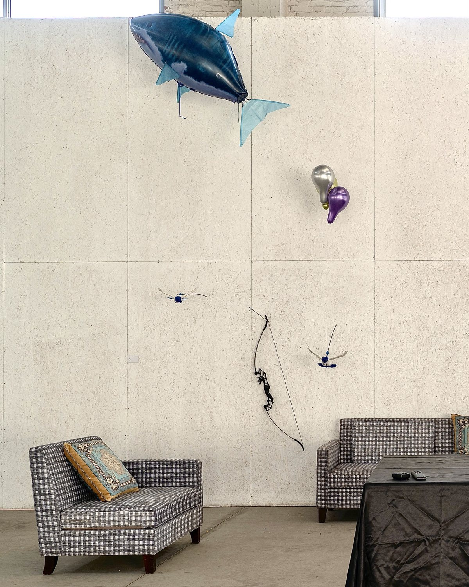